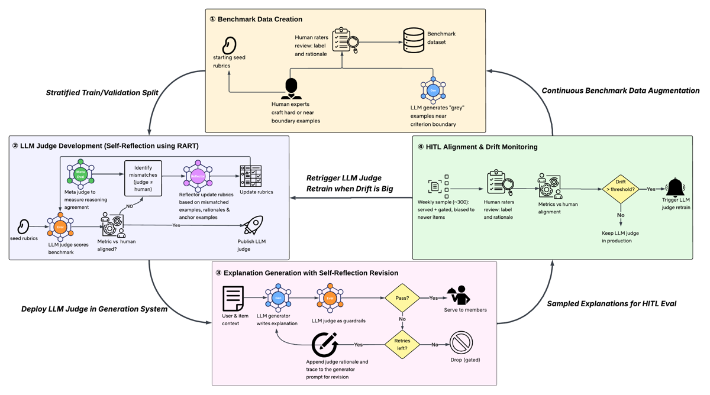
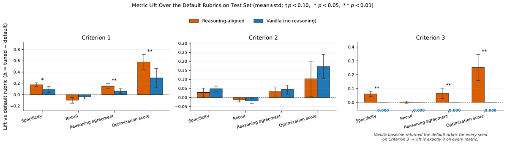
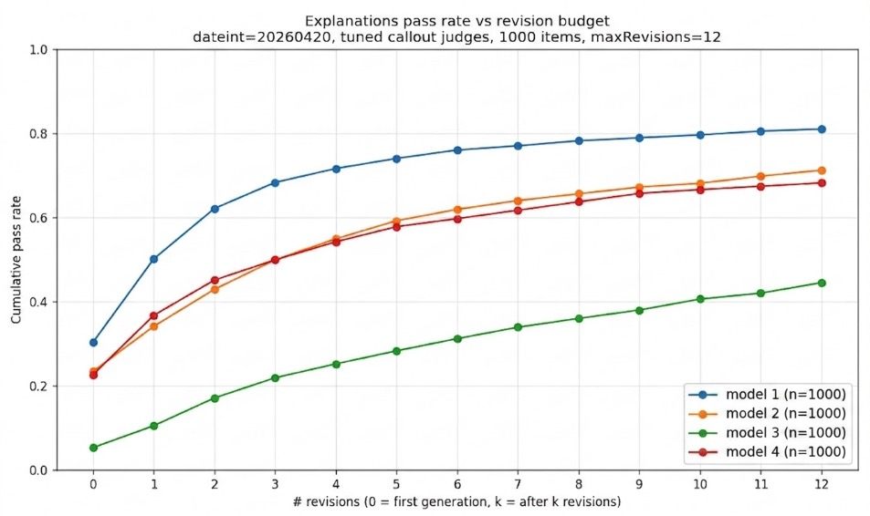

Retour d'expérience Netflix : un juge LLM en production n'est pas un artefact figé mais un cycle de vie en 4 phases — Birth (benchmark humain annoté de rationales), Training (RART : tuning de rubrique par méta-juge sur les raisons), Deployment (un seul juge en double rôle : gate + critique d'une boucle de révision bornée), Monitoring (échantillon humain hebdomadaire, détection de dérive, re-tuning derrière une porte de revue humaine).
Claim principal, formulé précisément : (i) RART, qui ajoute au signal de réflexion les cas « bon verdict, mauvaise raison », améliore la specificity du juge plus qu'une réflexion label-only, sur 2 des 3 critères must-have, 8 seeds, test held-out [Fig. 2] ; (ii) un pipeline d'explications gardé par ce juge, comparé à aucune explication, déplace le visionnage vers du contenu non vu (+0,2 % relatif, p<0,05) et augmente les sessions avec lecture réussie (+0,3 % relatif, p<0,05) sur 5 semaines et des dizaines de millions de membres [§6.2].
⚠️ Deux réserves qui gouvernent tout le reste du mémo : le bras de contrôle de l'A/B est « pas d'explication », donc l'A/B ne mesure pas l'apport du juge mais celui de la feature ; et la phase de monitoring, qui est la contribution réellement nouvelle, n'a jamais déclenché son chemin de re-tuning en ligne [§7, §8.1].
Pourquoi A malgré un evidence faible : aucun autre papier du corpus ne traite la maintenance d'un vérifieur dans la durée. Ce papier est la seule description d'une procédure opérationnelle complète — porte de revue humaine, rollback, bande d'acceptation indexée sur le désaccord humain (Eq. 5), stratification de l'échantillon de surveillance. C'est un papier dont on reprend la procédure, pas les chiffres.
Objet évalué : explications similarity-based, un message court en langage naturel reliant un titre recommandé à un (ou deux) titre(s) de référence déjà vus, via des attributs partagés (genre, ton) [§1]. Exemple recopié [§1] : « A funny, heartfelt holiday romance about love and new beginnings, much like My Secret Santa. »
Origine des tâches — benchmark Phase I, trois sources complémentaires [§4] : 1. expert-crafted : exemples forgés par les internal writing experts, chacun avec label pass/fail d'un rater humain, son failure mode connu, et une rationale d'échec — « couvrant des cas que les deux autres sources ne peuvent pas produire de façon fiable ». 2. LLM-synthesized près de la frontière du critère, puis étiquetés par des humains — capture les cas difficiles que l'échantillonnage naturaliste ne fait presque jamais remonter (les « grey examples » de [Fig. 1]). 3. échantillons du système de génération lui-même, collectés avant son intégration complète au pipeline de serving.
Qui définit quoi [§4] — à recopier tel quel, c'est le cœur de la procédure : - les internal writing experts définissent les critères, rédigent les labeling guidelines des raters humains, forgent les exemples adverses, et ancrent la notation humaine ; - les raters sont formés et calibrés par la Human Data Operations team — protocole interne, non détaillé dans le papier ; - chaque label FAIL porte une rationale en texte libre adossée à la guideline ; - les guidelines servent à la fois de référence pour les raters et de rubriques d'amorçage (seed rubrics) des juges LLM optimisés en Phase II. Un seul document est donc la source de vérité des deux côtés de la comparaison.
Critères [§4] : scindés en must-have pass/fail (3 au total, [§5]) que toute explication doit satisfaire avant d'être montrée, et critères plus souples de style et de pertinence de recommandation. Les définitions précises des critères sont retenues pour confidentialité [§4, App. A].
Volume et distribution [§4] : ~900 explications étiquetées humainement au démarrage des expériences en ligne ; répartition proche de l'équilibre avec légère majorité de FAIL (~54 %). Choix délibéré : les auteurs maintiennent les classes près de l'équilibre plutôt que de recopier la prévalence des échantillons générés, où les échecs sont bien plus rares. Raison donnée : Specificity (Eq. 1), RA_neg (Eq. 3) et les données d'entraînement de l'Algorithme 1 dépendent toutes des exemples échoués par l'humain. Conséquence que les auteurs énoncent eux-mêmes : les métriques d'alignement mesurent l'accord sur un benchmark équilibré et enrichi en difficulté, pas un taux de défaut sur le trafic live.
⚠️ Aucune distribution de difficulté n'est donnée au-delà de ce « enrichi en difficulté » ; pas de proportion par source (i/ii/iii) ; pas de volume par critère.
Filtrage : pas de filtrage par pass@k ni par modèle. Le seul filtrage est éditorial (experts) et humain (raters). Pour l'augmentation hebdomadaire, sous-échantillonnage pour préserver l'équilibre de classes [§7].
Curriculum : non applicable au sens RL. Le seul analogue est l'augmentation continue : ~300 explications fraîchement notées ajoutées chaque semaine au pool train/validation pendant les tests [§3, §7], biaisées vers les titres récents.
Contamination et séparation train/test : split train/validation/test ; Fig. 2 rapporte 8 seeds rééchantillonnant à chaque fois le split train/validation/test, et les lifts sont sur le test held-out [Fig. 2]. [Fig. 1] parle de Stratified Train/Validation Split. ⚠️ La stratification exacte, les tailles des trois splits et la gestion du recouvrement entre le pool hebdomadaire ajouté et le test set sont non précisées.
Données SFT/IFT avant RL : aucune — aucun poids n'est mis à jour nulle part dans le papier. Toute l'« optimisation » est en espace texte sur la rubrique.
Coût humain [§4, §7] : phase I « la plus intensive en humain des quatre ». Puis, en régime : ~300 explications/semaine × au moins 3 raters chacune [§7], plus 300 paires de rationales notées pour valider le méta-juge [§5.3], plus le temps des writing experts pour réviser les guidelines quand un pattern récurre [§7]. ⚠️ Aucune heure, aucun ETP, aucun coût d'annotation chiffré — non précisé. Seul coût chiffré du papier : « a few thousand US dollars per week » d'inférence end-to-end [§6.1].
⚠️ Ce n'est pas un env RL. Le « harness » est un pipeline de serving ; je le décris comme tel car c'est ce qui est transférable.
Le juge [§5.1] :
- Observation : un system message fixe décrivant la tâche d'évaluation, portant un slot templaté <criterion> qui contient la rubrique en cours de tuning ; un user message fournissant le texte de l'explication et les métadonnées du titre cible et du/des titre(s) de référence.
- Action : émission d'un objet JSON {label, reason} par explication — label pass/fail et raison en texte libre. Le reason n'est pas décoratif : c'est lui qui devient l'instruction de révision en Phase III.
- Le template est invariant par tâche et tenu constant : « tuning reduces to refining the criterion rubrics while the surrounding prompt is held constant ». ⚠️ Le prompt lui-même n'est pas recopié dans le papier — ni en annexe. Rien à recopier ici : il n'y est pas.
- Un juge par critère must-have, trois au total [§5]. Pas de juge unique multi-critères.
La boucle de serving [§6, §6.1] :
- generate → judge → revise, budget de retry fixe.
- Le générateur rédige conditionné sur le style (qui encode la cohorte d'utilisateurs), le titre cible et le/les titre(s) de référence [§6.1].
- Le juge note contre les critères, émet un label pass/fail et une raison par critère.
- Si tous les critères passent → servie. Si un critère échoue → la raison du juge est ajoutée au prompt du générateur et le générateur est ré-invoqué, jusqu'à K retries. Après K échecs → droppée (aucune explication montrée).
- Le gate rejette sur « a configurable subset of criteria » [§6] — quel sous-ensemble est déployé : non précisé.
- Asymétrie assumée : dropper plutôt que servir une explication signalée, parce qu'« une mauvaise explication est un risque de confiance, alors qu'une explication manquante ne fait que renoncer à une opportunité » [§6.1].
- K = 3 déployé, avec le meilleur générateur [§6.1].
Granularité de génération, point sous-estimé [§6] : les explications sont générées par item recommandé, pas par paire (user, item). Un modèle de personnalisation en ligne choisit ensuite la meilleure explication pour chaque paire. Une même explication peut donc être partagée par de très nombreux utilisateurs — ce qui est précisément ce qui rend le gate économiquement viable (on amortit le coût du juge sur beaucoup d'impressions) et ce qui rend un faux négatif coûteux (une bonne explication droppée l'est pour tous).
Single/multi-turn, horizon : la génération est single-turn, la révision est multi-turn borné à K=3 en prod, mesuré jusqu'à maxRevisions=12 hors-ligne [Fig. 3]. Gestion du contexte long : sans objet (explications courtes).
Exécution : appels d'API à des LLM internes, pas de sandbox, pas de simulateur. Déterminisme, température, reset, timeouts : non précisés. Gestion des erreurs d'outil et des sorties JSON mal formées : non précisée — c'est une lacune notable pour un papier qui se présente comme un retour d'expérience d'ingénierie, puisque le juge doit émettre du JSON valide des centaines de milliers de fois par semaine.
Exemple de trajectoire : le papier n'en donne aucun (ni explication rejetée, ni raison de juge, ni révision, ni rubrique avant/après). ⚠️ C'est la plus grosse absence du papier côté reproductibilité conceptuelle : on ne voit jamais à quoi ressemble une rubrique tunée par RART.
Type : LLM-as-a-judge conditionné par rubrique, un juge binaire par critère, sortie {label, reason} [§5.1]. Au-dessus, un méta-juge de rationales M qui compare la raison du juge à la rationale humaine et renvoie RATIONALE_AGREEMENT ou RATIONALE_MISMATCH [§5.3]. Pas de reward model appris, pas d'exécution, pas d'exact match.
Granularité : outcome binaire par critère (pass/fail), pas de crédit partiel. Agrégation à deux niveaux :
- en serving, conjonction : tous les critères doivent passer, sinon révision ou drop [§6.1] ;
- en optimisation de rubrique, score scalaire pondéré [Eq. 4] : s = w_s·Spec + w_r·Rec + w_ra·RA_neg avec w_s = 3, w_r = w_ra = 1.
Les trois métriques [§5.2] : | Métrique | Définition | Rôle | |---|---|---| | Specificity (fail-recall), Eq. 1 | |{ℓ_J=fail ∧ ℓ_H=fail}| / |{ℓ_H=fail}| | « our most critical metric » — les mauvaises explications qui passent le gate érodent directement la confiance | | Recall (pass-recall), Eq. 2 | |{ℓ_J=pass ∧ ℓ_H=pass}| / |{ℓ_H=pass}| | maintient la couverture des explications et borne le coût de révision | | RA_neg, Eq. 3 | |{x ∈ N : M(r_J,r_H)=agree}| / |F|, avec N = accord-fail et F = tous les fails humains | accord sur le pourquoi, pas seulement sur le verdict |
Détail de conception à retenir : le dénominateur de RA_neg est l'ensemble des fails humains, pas l'ensemble accord-fail. Un juge qui rate le label est donc pénalisé deux fois (Spec et RA_neg) — RA_neg est un majorant de Spec, pas une métrique orthogonale.
Justification explicite de l'asymétrie w_s = 3 [§5.2] : « les deux types d'erreur ne sont pas symétriques en ligne. Une mauvaise explication qui échappe au gating est servie aux membres, tandis qu'une bonne qui est rejetée est seulement révisée ou droppée. » Le terme RA_neg « favorise en plus les rubriques dont les rejets sont adossés à la bonne raison plutôt qu'à une coïncidence ».
Termes additionnels : aucun — pas de pénalité de longueur, pas de bonus de format, pas de terme KL (pas d'entraînement).
Fiabilité du vérifieur — ce qui est mesuré :
- Méta-juge M validé contre des humains [§5.3] : des raters formés ont étiqueté indépendamment l'accord de rationale sur un échantillon de 300 paires de rationales accord-fail ; les verdicts de M ont coïncidé avec les leurs 98,6 % du temps. C'est la seule validation chiffrée juge↔humain du papier.
- Panel de surveillance [§7] : ≥3 raters par explication, label majoritaire comme vérité terrain, et l'écart-type inter-raters sert directement de barre (Eq. 5, cf. §5 ci-dessous).
Fiabilité du vérifieur — ce qui n'est PAS mesuré ⚠️ (le point le plus sévère du mémo) :
- Aucune valeur absolue de Specificity, Recall ou RA_neg n'apparaît nulle part dans le papier — ni pour la rubrique par défaut, ni pour la rubrique tunée, ni par critère, ni en agrégé. Fig. 2 ne donne que des lifts Δ = tuned − default, lus sur un graphique à barres. On ne sait donc pas si le juge déployé rejette 60 % ou 95 % des mauvaises explications.
- Aucun taux de faux positifs / faux négatifs sur le trafic live. Les auteurs le disent eux-mêmes [§4] : les métriques mesurent l'accord sur un benchmark équilibré, « not defect rates on live traffic ».
- La validation de M ne transfère pas au juge principal, et les auteurs le signalent explicitement [App. A] : « a narrower and simpler task than full explanation judging, so it should not be read as evidence that the primary judge matches human judgment at a comparable rate. » Honnêteté à créditer, mais le trou reste.
- Erreurs corrélées [App. A] : le juge principal et le méta-juge M sont construits sur la même famille de modèle de base, donc « their errors are plausibly correlated » ; la validation humaine de M borne l'inquiétude sans la lever.
Si juge LLM — modèle, prompt, rubriques : modèle non précisé (confidentialité, App. A) ; prompt décrit en prose mais non recopié ; rubriques retenues pour confidentialité [§4]. Il n'y a rien à recopier en annexe : l'annexe du papier est une seule section de limitations supplémentaires, sans prompt, sans rubrique, sans exemple.
Robustesse / attaque du vérifieur : aucun test adverse rapporté. Le juge n'est jamais attaqué, ni par un générateur optimisé contre lui, ni par des exemples construits pour le tromper (les exemples adverses de Phase I servent à entraîner la rubrique, pas à auditer le juge final). ⚠️ Et pourtant il y a bien une pression d'optimisation en inférence : voir §5.
Algorithme : aucun algorithme RL. Reasoning-Aligned Rubric Tuning (RART) [Alg. 1, §5.1] — optimisation en espace texte de la rubrique, par un LLM reflector R, avec sélection du meilleur checkpoint. Recopie de la boucle :
Entrées : rubrique initiale R_0 ; D_tr, D_val, D_te ; max itérations N
Juges : J(R) : x → (ℓ_J, r_J) ; méta-juge M(r_J, r_H) → {agree, mismatch} ; reflector R(R, focus) → R'
R* ← R_0 ; s* ← −∞
pour t = 0 … N−1 :
scorer D_tr et D_val avec J(R_t)
s ← métriques d'alignement pondérées sur D_val (Eq. 4)
si s > s* : R* ← R_t ; s* ← s (best checkpoint)
si toutes les métriques franchissent la borne propre au critère : break (early stopping)
X ← {x : ℓ_J(x) ≠ ℓ_H(x)} (erreurs de label)
N ← {x : ℓ_J(x) = ℓ_H(x) = fail} (accord-fail)
N_× ← {x ∈ N : M(r_J(x), r_H(x)) = mismatch} (bon verdict, mauvaise raison)
focus ← X ∪ N_×
R_{t+1} ← R(R_t, focus)
retourner R*
Ce qui diffère des travaux voisins [§2, §5.3] :
- vs Meta-Rewarding (Wu et al. 2024) : le méta-juge y est non supervisé ; ici il est ancré sur des rationales humaines.
- vs TextGrad / ACE / GEPA : le « gradient textuel » est calculé sur des désaccords de rationale, pas sur des générations. Les auteurs positionnent RART comme un cas particulier glouton et mono-objectif de GEPA [§2, §8.2].
- vs rubric synthesis depuis des paires chosen/rejected (OpenRubrics) : complémentaire.
- M n'est lancé que sur les exemples accord-fail, et les accords sont laissés intacts « pour que la rubrique préserve ce que le juge réussit déjà » [§5.3]. Justification de déploiement, pas seulement statistique : en Phase III la raison du rejet devient l'instruction de révision, donc un rejet au bon verdict mais pour la mauvaise raison propage un signal trompeur en aval [§5.3].
Hyperparamètres : w_s = 3, w_r = w_ra = 1 [Eq. 4] ; K = 3 retries en prod [§6.1] ; 8 seeds pour Fig. 2. Tout le reste est non précisé : N (max itérations), les « per-criterion bounds » d'early stopping, les températures, la taille des splits, le nombre d'itérations effectivement atteint, le modèle du reflector, le modèle de M.
Stabilité : une instabilité documentée, et elle est instructive [§5.3] — sur le critère 3, la variante vanilla (réflexion label-only) « a fait s'effondrer la specificity et le reasoning agreement à chaque itération » ; la règle du meilleur checkpoint a donc renvoyé essentiellement la rubrique par défaut, d'où un lift exactement nul sur toutes les métriques [Fig. 2, note du panneau 3]. Autrement dit : la règle du best-checkpoint est ce qui a empêché une boucle de réflexion label-only de dégrader le juge en production. C'est l'astuce de stabilité la plus transférable du papier.
Compute : aucun GPU/TPU-heure (aucun entraînement). Seul chiffre : « a few thousand US dollars per week » pour l'inférence end-to-end du pipeline à K=3 [§6.1].
Dynamique : aucune courbe de reward, de longueur ou d'entropie — sans objet. La seule courbe de dynamique est le pass rate cumulé vs budget de révision [Fig. 3].
| # | Comportement | Comment détecté | Correction |
|---|---|---|---|
| 1 | Bon verdict, mauvaise raison : juge et humain disent tous deux « fail », mais pour des motifs divergents | méta-juge M sur les exemples accord-fail [§5.3] |
les mismatches rejoignent le focus set du reflector ; motivé par le fait qu'en Phase III la raison devient l'instruction de révision |
| 2 | Réflexion label-only effondre le juge (critère 3 : specificity et RA s'écroulent à chaque itération) | métriques pondérées sur D_val à chaque itération | règle du meilleur checkpoint → renvoi de la rubrique par défaut, lift 0 au lieu d'une régression [§5.3, Fig. 2] |
| 3 | La révision ne sauve pas un générateur faible : le modèle 3 reste sous 50 % de pass rate même à k=12 | courbe pass rate vs k sur n=1000 [Fig. 3] | ne pas compter sur le juge pour compenser le générateur — « judge-guided revision amplifies a capable generator rather than substituting for one » [Fig. 3] ; déployer le meilleur générateur |
| 4 | Régression générateur confondue avec dérive juge | « une chute soutenue du pass rate à k=0 signale une régression côté générateur plutôt qu'une dérive du juge » [§6.1] | diagnostic séparé via le pass rate à k=0 |
| 5 | Cas limites dépendant de l'assurance du phrasé : le pass/fail dépend de la confiance avec laquelle l'explication est formulée plutôt que de la qualité de la recommandation sous-jacente | revue humaine hebdomadaire [§7] | révision des labeling guidelines par les writing/review experts, puis re-tuning des juges concernés |
| 6 | Échecs concentrés par genre : comparaisons de spectacles de stand-up qui partagent des tags de surface mais relèvent de contextes culturels très différents | idem [§7] | idem |
| 7 | Explications passant tous les must-have mais « confuses ou bizarrement cadrées » | idem [§7] | idem — « chacun appelle un changement des rubriques elles-mêmes » |
| 8 | Erreurs corrélées juge / méta-juge (même famille de modèle de base) | raisonnement a priori des auteurs, pas une mesure | validation humaine de M (98,6 %) qui « borne la préoccupation sans la supprimer » [App. A] |
Point méthodologique important sur 5–7 [§7] : « None of these necessarily move the agreement metrics, yet each calls for a change to the rubrics themselves. » Les auteurs en tirent la bonne conclusion — la détection de dérive quantitative est aveugle aux problèmes de longue traîne, et la revue qualitative hebdomadaire attrape des trous dans la rubrique, pas seulement une dégradation relativement à la rubrique. Et comme les guidelines sont la source de vérité des deux côtés, une révision met à jour raters et seed rubrics d'un seul coup.
Reward hacking : le papier n'en rapporte aucun, et n'emploie jamais le terme. Est-ce crédible vu la conception ? - ✅ Crédible au sens strict : aucun gradient ne pousse une politique contre ce juge. Le générateur n'est pas entraîné sur le signal du juge. - ❌ ⚠️ Mais il y a bien une pression d'optimisation en inférence : jusqu'à K=3 régénérations conditionnées sur la raison du juge, sélectionnées pour passer le gate. Le pass rate cumulé monte de ~0,30 à ~0,68 (modèle 1, k=0→3 [Fig. 3]) — ce qui est recherché est « meilleure explication », ce qui est mesuré est « explication qui satisfait le juge ». Le papier ne rapporte aucune vérification que les explications servies après révision sont humainement aussi bonnes que celles servies sans révision. - Le plus frustrant : l'instrument existe et n'est pas exploité. L'échantillon hebdomadaire est explicitement stratifié sur served without revision / served after revision / dropped [§7] — c'est exactement la stratification qu'il faut pour détecter un gain de pass rate obtenu par satisfaction du juge plutôt que par qualité réelle. La décomposition par strate n'est jamais rapportée. C'est le point où un retour d'expérience décrit un processus sans en évaluer l'effet.
Peu de contenu — le papier est explicitement non technique sur l'infra. - Débit : « hundreds of thousands of distinct item-level explanations per week » générées et jugées [abstract, §1, §3], sur un catalogue changeant, pendant la fenêtre d'A/B de 5 semaines. - Pass rate agrégé en prod : « passing over 75 % with a retry budget of 3 » [§3] — ⚠️ voir §7.0, en tension avec Fig. 3. - Coût : « a few thousand US dollars per week » en coût d'inférence end-to-end à K=3 [§6.1]. Pas de décomposition générateur / juge / méta-juge, pas de coût par explication, pas de coût par rollout de révision. - Sync vs async, parallélisme, goulots d'étranglement, latence du gate sur le chemin de serving : non précisés. Le papier ne dit pas si le gate est synchrone sur le chemin d'affichage ou si les explications sont pré-calculées en batch — l'indice fort est le pré-calcul, puisque les explications sont générées par item puis appariées en ligne par un modèle de personnalisation [§6], mais ce n'est jamais énoncé. - Coût humain en régime : ~300 explications/semaine × ≥3 raters, non chiffré en heures.
⚠️ Préalable méthodologique : le papier ne contient aucun tableau. Tous les chiffres sont soit en prose, soit lisibles sur l'une des trois figures. Les valeurs attribuées ci-dessous à Fig. 2 et Fig. 3 sont des lectures graphiques (±0,02) faites sur les PNG de papers/2608.18300/figs/.
| Chiffre annoncé | Où il est annoncé | Source dans le papier | Verdict |
|---|---|---|---|
| « hundreds of thousands of distinct show-level explanations per week » | abstract, §1, §3 | §3 et §6.2, en prose uniquement | confirmé (qualitatif ; jamais chiffré ni décomposé) |
| « passing over 75 % with a retry budget of 3 » | §3 (System Overview) | Fig. 3 : modèle 1 ≈ 0,68 à k=3 ; ≈ 0,715 à k=4 ; ≈ 0,81 à k=12 | contredit — 75 % n'est atteint par aucun modèle à k=3. Nuance : §3 parle du trafic live sur 5 semaines, Fig. 3 d'un échantillon n=1000 daté du 2026-04-20 ; le papier ne réconcilie jamais les deux populations et ne rapporte aucun pass rate live mesuré |
| « The three strong generators capture ≥80 % of their achievable lift by k=3–4 » | §6.1 | Fig. 3 : lift réalisé / lift total (k=12 − k=0) — modèle 1 ≈ 75 % à k=3 et ≈ 81 % à k=4 ; modèle 2 ≈ 66 % à k=4 ; modèle 4 ≈ 70 % à k=4 | contredit pour 2 des 3 « strong generators » ; vrai seulement pour le modèle 1 à k=4. ⚠️ C'est l'affirmation qui justifie le choix de K=3 en production |
| « model 3 stays below 50 % even at k=12 » | §6.1, légende Fig. 3 | Fig. 3 : ≈ 0,445 à k=12 | confirmé |
| RART « refines the judges' rubrics … using a meta-judge over reasoning as the learning signal » → amélioration | abstract, §1 (contribution 2) | Fig. 2, 8 seeds, test held-out | sur-généralisé — vrai et significatif sur critères 1 et 3 ; sur le critère 2, vanilla est directionnellement supérieur à RART sur les quatre métriques (aucune marque de significativité). Le texte dit « indistinguishable » [§5.3], ce qui est défendable statistiquement mais masque le sens de l'écart |
| « RART improves specificity more than vanilla wherever the default rubric leaves headroom » | §5.3 | Fig. 2 : crit. 1 Spec Δ ≈ +0,17 (RART) vs +0,09 (vanilla), p<0,05 ; crit. 3 Δ ≈ +0,06 vs 0,000, p<0,01 ; crit. 2 Δ ≈ +0,028 vs +0,048 | confirmé, mais la clause « wherever there is headroom » est non falsifiable telle qu'énoncée : le critère 2, seul contre-exemple, est écarté comme « déjà près du plafond » sans qu'aucune valeur absolue de specificity ne soit donnée pour l'établir |
Méta-judge M : 98,6 % d'accord sur 300 paires de rationales accord-fail |
§5.3 | §5.3 | confirmé (chiffre unique, pas d'IC, pas de kappa, pas de taux d'accord inter-raters sur cette même tâche) |
| « (IV) Monitoring runs a continuous HITL alignment process that detects drift and triggers re-tuning behind a human review gate » | abstract | §7 : « the judge stayed within the human band on every metric … so no re-tuning was triggered » ; §8.1 : « The drift-triggered re-tuning path has not yet fired online, so its automated response is validated only offline » | sur-généralisé — mécanisme conçu et instrumenté, jamais exercé. L'abstract décrit une capacité au présent de l'indicatif ; le corps dit qu'elle n'a jamais été déclenchée |
| A/B : 5 semaines, dizaines de millions de membres, app mobile, contrôle sans explication | abstract | §6.2 | confirmé |
| +0,2 % relatif de visionnage de contenu nouveau (jamais vu), p<0,05 | §6.2 (abstract : qualitatif) | §6.2 | confirmé en tant que mesure — mais ⚠️ non attribuable au juge : le bras de contrôle est « pas d'explication », pas « explications non jugées ». L'A/B mesure l'apport de la feature, pas celui du juge ni de RART |
| +0,3 % relatif de sessions avec lecture réussie, p<0,05 | §6.2 | §6.2 | idem — confirmé, non attribuable au juge |
| « with no quality-related escalations » | abstract, §6.2 | §6.2 : « no user-initiated escalations related to explanation quality » | confirmé au sens littéral ⚠️ mais c'est une absence de plainte, pas une mesure de taux de défaut servi. Présenté dans l'abstract comme un résultat de qualité |
| « the judge stayed within the human band on every metric, including on newly added titles » | §7 | aucune valeur — ni M(J), ni mean(M(H)), ni sd(M(H)), pour aucune semaine, aucun critère | introuvable — affirmation centrale de la Phase IV, zéro chiffre à l'appui |
| ~900 explications au benchmark, ~54 % fail | §4 | §4 | confirmé (prose, chiffre unique) |
| ~300 explications relabellisées par semaine, ≥3 raters, label majoritaire | §3, §7 | §7 | confirmé (prose) |
| « a few thousand US dollars per week » d'inférence | §6.1 | §6.1 | confirmé (auto-déclaré, non décomposé) |
Bilan 7.0 : deux contredits (pass rate à K=3, et la règle des ≥80 % qui justifie K=3), deux sur-généralisés (la détection de dérive jamais déclenchée ; RART présenté comme un gain général alors qu'il est nul ou négatif sur 1 critère sur 3), un introuvable majeur (le juge « reste dans la bande humaine » sans un seul chiffre). Case coherence fausse.
| Mesure | Valeur | Baseline | Écart | Source |
|---|---|---|---|---|
| Spec Δ, critère 1 | ≈ +0,17 (RART) | ≈ +0,09 (vanilla) | ≈ +0,08, p<0,05 | Fig. 2 (lecture graphique) |
| RA_neg Δ, critère 1 | ≈ +0,15 | ≈ +0,065 | ≈ +0,09, p<0,01 | Fig. 2 |
| Score d'optim. Δ, critère 1 | ≈ +0,58 | ≈ +0,29 | ≈ +0,29, p<0,01 | Fig. 2 |
| Recall Δ, critère 1 | ≈ −0,06 | ≈ −0,03 | RART coûte plus de recall | Fig. 2 |
| Spec Δ, critère 2 | ≈ +0,028 | ≈ +0,048 | −0,02 (vanilla devant), n.s. | Fig. 2 |
| Spec Δ, critère 3 | ≈ +0,06 | 0,000 (vanilla renvoie la rubrique par défaut à chaque seed) | +0,06, p<0,01 | Fig. 2 |
| Pass rate cumulé, meilleur générateur | ≈ 0,30 (k=0) → ≈ 0,68 (k=3) → ≈ 0,81 (k=12) | — | — | Fig. 3 |
| Novel content (A/B) | +0,2 % relatif, p<0,05 | pas d'explication | — | §6.2 |
| Sessions avec lecture réussie (A/B) | +0,3 % relatif, p<0,05 | pas d'explication | — | §6.2 |
Les auteurs qualifient eux-mêmes ces lifts de « small in absolute value », en arguant qu'à leur échelle l'effet agrégé est substantiel et que « des mouvements de cet ordre sont considérés comme significatifs pour une intervention au niveau feature sur cette surface » [§6.2]. ⚠️ Cette dernière affirmation est une norme interne non sourcée ; impossible à évaluer de l'extérieur.
Une seule, mais c'est la bonne : RART vs vanilla (boucle identique, reflector ne voyant que les désaccords de label), 3 critères, 8 seeds rééchantillonnant les splits, test held-out, test des signes bilatéral [Fig. 2]. Elle isole précisément la contribution revendiquée — l'ajout du signal de raison.
Ce que l'ablation montre vraiment : l'ingrédient qui compte n'est pas uniformément le signal de raison, c'est le signal de raison là où la rubrique par défaut laisse de la marge. Et le résultat le plus solide n'est pas un gain mais une protection : sur le critère 3, label-only dégrade activement la rubrique à chaque itération et n'est sauvé que par le best-checkpoint.
Ablations absentes : pas de comparaison à GEPA / TextGrad (admis, §8.1) ; pas d'ablation du poids w_s=3 ; pas d'ablation de la restriction de M aux seuls accord-fail (pourtant un choix de conception central) ; pas d'ablation de la composition du benchmark (expert-crafted vs synthétique vs échantillonné) alors que le takeaway n°1 du papier est « invest in the benchmark before the judge » [§9] ; pas d'ablation de K.
Aucun effet de taille de modèle, de nombre de tâches ou de compute n'est étudié. Les seuls axes de « scale » sont opérationnels : volume de trafic (centaines de milliers/semaine), taille du panel (≥3 raters), budget de retry (k jusqu'à 12). Non mesuré : effet de la taille du benchmark (~900) sur la qualité de la rubrique tunée — question pourtant directement actionnable et peu coûteuse.
Grille evidence (2/5, repro n.a.)
1. baselines ✗ — pas d'optimiseur textuel de référence pour RART [§8.1] ; contrôle A/B = absence d'explication, donc l'apport du juge n'est jamais isolé en ligne.
2. ablation ✓ — RART vs vanilla label-only, boucle identique, 3 critères, 8 seeds, test held-out [Fig. 2].
3. variance ✓ — 8 seeds ±std + test des signes [Fig. 2] ; p<0,05 sur l'A/B ; sd inter-raters intégrée à Eq. 5.
4. coherence ✗ — « >75 % à K=3 » et « ≥80 % du lift à k=3–4 » contredits par Fig. 3 ; « reste dans la bande humaine » sans aucun chiffre.
5. eval ✗ — aucune valeur absolue de Spec/Rec/RA_neg pour le juge principal ; aucun taux de défaut live ; validation humaine limitée au méta-juge, extrapolation explicitement refusée par les auteurs [App. A].
6. repro n.a. — déploiement propriétaire sur trafic membres : aucun tiers ne peut rejouer un A/B de 5 semaines sur Netflix. Case marquée n.a. au titre du type de papier, avec la réserve ci-dessus.
Verdict : plausible mais fragile — à retenir pour la procédure, pas pour les chiffres. La description opérationnelle (qui définit les critères, qui note, à quelle cadence, quelle bande d'acceptation, quelle porte humaine, quel rollback) est précise, cohérente, et unique dans le corpus. L'ablation RART est honnête et bien faite. Mais : (a) les deux chiffres qui justifient les choix de déploiement sont contredits par la seule figure qui les mesure ; (b) le résultat en ligne ne teste pas l'objet du papier, parce que le contrôle est l'absence de la feature ; (c) la contribution annoncée comme nouvelle — la détection de dérive — n'a jamais été exercée et ne porte pas un seul chiffre ; (d) aucune valeur absolue de qualité du juge, nulle part. C'est l'illustration exacte du biais du retour d'expérience : un processus décrit en détail, dont l'efficacité n'est jamais évaluée.

Ce qu'il faut voir : la seule représentation complète d'un vérifieur maintenu en boucle fermée. Quatre blocs et, surtout, quatre flèches nommées qui sont le vrai contenu : Stratified Train/Validation Split (I→II), Deploy LLM Judge in Generation System (II→III), Sampled Explanations for HITL Eval (III→IV), Continuous Benchmark Data Augmentation (IV→I), plus la flèche de retour Retrigger LLM Judge Retrain when Drift is Big (IV→II). Noter dans ② la structure de RART :seed rubrics → LLM judge scores benchmark → Meta judge to measure reasoning agreement → Identify mismatches (judge ≠ human) → Reflector update rubrics based on mismatched examples, rationales & anchor examples → Update rubrics, avec la sortie « Metric vs human aligned? → Yes → Publish LLM judge ». Dans ③, la boucle de serving : Pass? → No → Retries left? → Yes → Append judge rationale and trace to the generator prompt for revision, et No → Drop (gated). Dans ④, le test explicite Drift > threshold? → Yes → Trigger LLM judge retrain / No → Keep LLM judge in production. ⚠️ Ce chemin « Yes » est celui qui n'a jamais été emprunté en ligne [§7, §8.1].

Ce qu'il faut voir : le résultat principal, et ses nuances. Critère 1 : RART bat vanilla sur Specificity (), Reasoning agreement () et score d'optimisation (), au prix d'un Recall plus dégradé (≈ −0,06 contre ≈ −0,03) — asymétrie assumée [§5.3]. Critère 3 : vanilla est exactement 0,000 sur les quatre métriques, avec la note du panneau « Vanilla baseline returned the default rubric for every seed on Criterion 3 → lift is exactly 0 on every metric » ; c'est le best-checkpoint qui a absorbé un effondrement, pas une absence d'effet. Critère 2 : vanilla est directionnellement devant RART sur les quatre métriques (Spec ≈ +0,048 vs +0,028 ; score d'optim. ≈ +0,17 vs +0,105), sans significativité — le texte parle de « indistinguishable », ce qui est correct mais oriente la lecture. Noter enfin que l'axe est un Δ* : aucune valeur absolue de qualité du juge n'est lisible ici ni ailleurs dans le papier.
Ce qu'il faut voir : la figure qui contredit deux affirmations du texte. Le meilleur générateur (modèle 1) plafonne à ≈ 0,68 à k=3 et ≈ 0,81 à k=12 — donc « over 75 % with a retry budget of 3 » [§3] n'est atteint par aucun modèle à k=3. Et le lift réalisé à k=4 vaut ≈ 81 % du lift total pour le modèle 1 mais seulement ≈ 66 % (modèle 2) et ≈ 70 % (modèle 4), contre les « ≥80 % by k=3–4 » annoncés pour les trois générateurs forts [§6.1] — or c'est cette règle qui justifie K=3 en production. À voir aussi, et c'est le failure mode n°3 : le modèle 3 (vert) démarre à ≈ 0,05 et ne dépasse pas ≈ 0,445 même après 12 révisions — la critique du juge amplifie un bon générateur, elle ne le remplace pas. Enfin, l'en-tête de figure révèle ce que le texte tait :dateint=20260420, tuned callout judges, 1000 items, maxRevisions=12 — une seule journée d'échantillonnage.
| Ingrédient | Choix du papier | Équivalent juridique | Transfert | Ce qui manque |
|---|---|---|---|---|
| Source des tâches | 3 sources : exemples forgés par experts (avec failure mode + rationale), exemples LLM près de la frontière étiquetés par humains, échantillons du système de génération [§4] | juristes seniors forgent les cas limites (hedging abusif, citation plausible mais inexistante, bonne règle / mauvaise juridiction), génération LLM de réponses frontière, échantillons de trafic type Harvey LAB | direct | rien de bloquant ; la source (ii) est la moins chère et la plus sous-exploitée en droit |
| Rationale obligatoire sur chaque FAIL | tout label fail porte une rationale en texte libre adossée à la guideline [§4] | chaque rejet d'expert porte le motif, référencé à la ligne directrice (quel critère, quelle source manquante) | direct | surcoût d'annotation jamais chiffré par le papier ; c'est le pari à faire |
| Vérifieur | un juge binaire par critère must-have (3), sortie JSON {label, reason}, rubrique templatée dans un prompt fixe [§5.1] |
décomposition en critères binaires séparément vérifiables : la citation existe / elle supporte la proposition / la juridiction est la bonne / pas de contradiction avec l'autorité citée / portée correctement bornée | direct — plus naturel en droit qu'en reco, car plusieurs de ces critères admettent une vérification exacte (existence et contenu de la source) | le papier ne dit pas comment agréger must-have et critères souples en dehors de la conjonction |
| Asymétrie du score | w_s = 3 sur la specificity, car une mauvaise explication servie est irrécupérable tandis qu'un faux rejet n'entraîne qu'une régénération [Eq. 4, §5.2] |
une citation hallucinée servie est un risque déontologique ; un faux rejet coûte une régénération ou une escalade | direct | pas d'ablation du poids ; la valeur 3 est arbitraire |
| Harness / outils | generate → judge → revise, K=3, la raison du juge devient l'instruction de révision, drop après K [§6.1] | critique → révision bornée ; drop = refus de répondre ou escalade humaine plutôt que réponse non sourcée | adaptable | aucune vérification que la révision améliore réellement plutôt que de satisfaire le juge (cf. §5) |
| Algo | aucun RL ; tuning de rubrique en espace texte par reflector + best-checkpoint [Alg. 1] | utilisable comme pré-étape avant RLVR : aligner le vérifieur sur les juristes avant de l'optimiser contre | direct et peu coûteux | ne dit rien du comportement sous pression de gradient |
| Curriculum / data mix | équilibre de classes délibéré (~54 % fail) contre la prévalence réelle ; sous-échantillonnage hebdomadaire pour préserver l'équilibre [§4, §7] | sur-représenter les cas limites et les échecs ; ne jamais calibrer le juge sur la prévalence de production | direct | effet de la taille du benchmark non étudié |
| Monitoring / dérive | Eq. 5 : M(J) ≥ mean(M(H)) − 2·sd(M(H)), par métrique, panel ≥3 raters, échantillon hebdo ~300 stratifié (servi sans révision / servi après révision / droppé) et biaisé vers les items récents ; stratification figée semaine après semaine [§7] |
panel de 3 juristes, échantillon hebdomadaire stratifié par décision du juge et biaisé vers le droit postérieur à une date T | direct — et plus utile en droit qu'en reco | jamais exercé en ligne ; sensibilité de la bande jamais démontrée |
| Sous-population de dérive | critère appliqué séparément aux titres nouvellement ajoutés, « where a threshold calibrated on established content would misfire » [§7] | appliqué séparément au droit postérieur au cut-off : nouvelles décisions, réformes, revirements, nouvelle version d'un code | direct — l'analogue est exact, et le droit a un marqueur de nouveauté bien plus net qu'un catalogue | aucun chiffre sur cette strate |
| Porte de revue + rollback | une dérive déclenche le re-tuning Phase II ; la nouvelle rubrique est mise en attente derrière une revue manuelle avant déploiement, l'ancienne étant conservée pour rollback [§7] | aucune rubrique juridique ne part en prod sans validation d'un juriste ; versionner les rubriques et garder le rollback | direct | qui exactement tient la porte, selon quel SLA : non précisé |
| Boucle qualitative | la revue hebdomadaire fait remonter des patterns que l'accord agrégé ne bouge pas ; quand un pattern récurre, les experts révisent les guidelines, qui mettent à jour raters et seed rubrics en un coup [§7] | revue de patterns par domaine (fiscal vs social vs contentieux) ; une guideline unique source de vérité pour l'annotation et pour le juge | direct | cadence de révision des guidelines non précisée ; aucune mesure de l'effet d'une révision |
| Anti-hacking | aucun test adverse ; aucun gradient donc aucune politique optimisant contre le juge | en RLVR le juge subira une pression d'optimisation incomparablement supérieure | non | tout : c'est le trou que ce papier ne comble pas |
Meilleur ingrédient à transposer — l'équation 5, la bande d'acceptation indexée sur le désaccord humain.
M(J) ≥ mean(M(H)) − 2·sd(M(H)), avec la sd calculée entre raters sur le même échantillon hebdomadaire. Raison pour laquelle c'est le bon ingrédient en droit, et la citation du papier qui le dit le mieux [§7] : « A harder weekly sample raises human disagreement, widening sd(M(H)) and with it the acceptance band, so the judge is not penalized for difficulty that humans also find hard. » Le droit n'a pas de vérité exacte et son désaccord inter-expert est à la fois élevé et variable par question — un seuil absolu de type « 90 % d'accord juge-juriste » serait calibré sur la difficulté moyenne et se tromperait dans les deux sens : trop laxiste sur les questions faciles, injuste sur les questions ouvertes. La bande transforme la question « le juge est-il bon ? », indécidable, en « le juge est-il moins bon que l'annotateur moyen compte tenu du désaccord sur ce lot ? », décidable. Et le dédoublement sur la strate « droit nouveau » est ce qui fait du monitoring un détecteur de shift plutôt qu'un test de non-régression : les auteurs sont explicites, « Requiring no degradation on new titles is what makes the loop a shift detector rather than a generic regression test » [§7].
Second ingrédient, moins visible mais structurant : une guideline unique comme source de vérité des deux côtés (raters humains ET seed rubric du juge). Cela rend la révision de critère atomique — on ne peut pas dériver entre ce qu'on demande aux annotateurs et ce qu'on demande au vérifieur, ce qui est le mode de défaillance standard des pipelines d'annotation juridique au long cours.
Expérience minimale
Panel de 3 juristes. Échantillon hebdomadaire de 200–300 réponses tirées du pool généré, stratifié sur la décision du vérifieur (servie sans révision / servie après révision / refusée) et biaisé vers les questions portant sur du droit postérieur à une date T (après le cut-off du modèle, ou après une réforme identifiée). Chaque réponse notée par les 3 juristes, label majoritaire comme référence. Calculer par critère M(J) et mean/sd(M(H)), puis appliquer Eq. 5 deux fois : sur l'échantillon complet, et sur la seule strate « droit nouveau ».
Résultat attendu : le juge tient la bande sur l'agrégat et la perd sur la strate droit nouveau. Ce serait le résultat utile — il établirait (i) que la dérive juridique est mesurable avant d'être visible sur l'agrégat, ce que le papier postule sans le démontrer puisque sa bande n'a jamais été franchie, et (ii) que la stratification est l'ingrédient actif, pas la bande elle-même.
Extension à coût quasi nul, et c'est la mesure que le papier aurait dû faire : comparer, sur ce même échantillon, le taux de conformité humaine des réponses servies après révision à celui des réponses servies sans révision. Un écart négatif significatif signerait du hacking de vérifieur en inférence — la révision bornée produisant des réponses qui satisfont le juge sans satisfaire le juriste. L'instrument de stratification existe déjà dans le protocole ; seule la décomposition manque.
Questions à poser en interne chez GDM
1. Avant d'utiliser un juge comme reward sur Gemini Law, exige-t-on qu'il franchisse une bande de type Eq. 5 par critère et sur la strate « droit postérieur au cut-off » ? Et qui tient la porte de revue humaine avant de pousser une rubrique révisée — avec quel SLA, et conserve-t-on la rubrique précédente pour rollback ?
2. L'ablation RART vs réflexion label-only est-elle rejouée sur nos rubriques juridiques avant d'investir dans l'annotation de rationales ? Le surcoût d'annotation (une rationale référencée sur chaque rejet d'expert) est le vrai pari du papier, et son bénéfice n'est significatif que là où la rubrique de départ laisse de la marge (nul sur 1 critère sur 3, [Fig. 2]).
3. Le papier pose lui-même notre question en future work [§8.2, item 4] : promouvoir le juge d'évaluateur à reward model — « a rubric-tuned judge already emits a reason and a label, which is the shape a reasoning reward model needs ». Et il propose la bonne formulation, qu'on devrait reprendre : objectif contraint plutôt que score pondéré — chaque critère must-have maintenu à son point de fonctionnement comme contrainte pendant que les critères souples sont optimisés, au lieu de figer le compromis à l'avance via w_s. Pour le droit, où les must-have sont déontologiques (pas de citation inexistante, bonne juridiction), c'est la formulation correcte, et elle ne figure dans aucun autre papier du corpus.